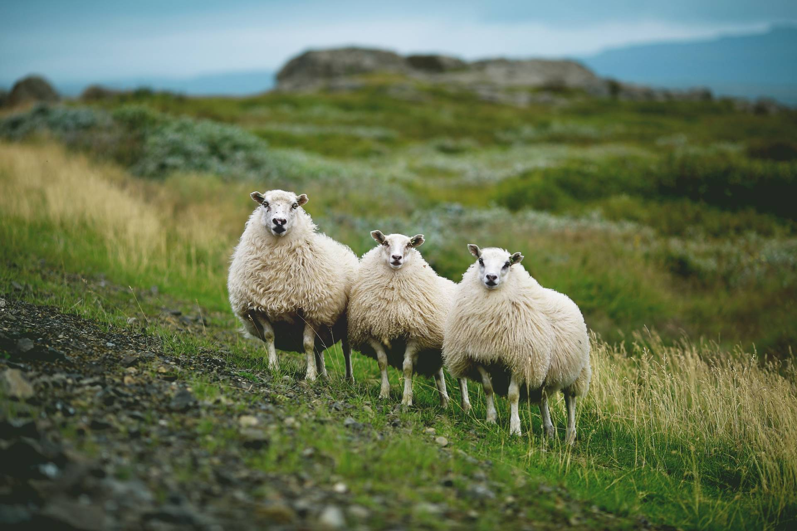

Rúmgóðar lóðir
Flestar ½ ha (~5.000 m²) · leigulóðir til 25 ára, opið fyrir sölu.
Sumarhúsalóðir í grónu landi við Brúará — í hjarta Gullna hringsins.

rekkuskógur er frístundabyggð í Bláskógabyggð (Biskupstungum), umvafin skógrækt og náttúru við ána Brúará. Hér eru rúmgóðar sumarhúsalóðir í grónu, skjólsælu landi.
Stutt er í helstu náttúruperlur Suðurlands og alla þjónustu, enda liggur Gullni hringurinn við túnfótinn. Lóðamörkin eru afmörkuð með landmældum hnitum og hægt er að skoða hverja lóð á gagnvirku gervihnattakorti.
Flestar ½ ha (~5.000 m²) · leigulóðir til 25 ára, opið fyrir sölu.
Aksturshlið — aðgangur eigenda og leigutaka.
Allir stofnvegir klæddir olíumöl.
Rafmagn, heitt og kalt vatn um allt hverfið.
Stutt í Brúarárfoss, Brúarárskörð o.fl.

Gagnvirkt þrívítt gervihnattakort sýnir allar lóðir á réttum, landmældum stað. Litir tákna stöðu hverrar lóðar. Opnaðu lóðakortið til að sjá stærð, stöðu og fasteignanúmer.
Brekkuskógur liggur miðsvæðis á Gullna hringnum. Stutt er í náttúruperlur, sundlaugar, golf og alla þjónustu.
Túrkisblár foss í Brúará, þekktur fyrir einstakan lit. Falleg gönguleið rétt við byggðina.
Hverasvæðið í Haukadal þar sem Strokkur gýs á nokkurra mínútna fresti.
Vatn og þorp með gufuböðum (Fontana), sundi og þjónustu.
Einn tilkomumesti foss landsins í Hvítá.
Vegalengdir eru u.þ.b. og miðast við akstur frá svæðinu. Myndir: Wikimedia Commons (CC BY/BY-SA).
Fylltu út formið og við svörum fyrirspurnum um lausar lóðir, verð og skilmála.